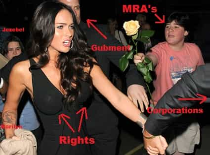
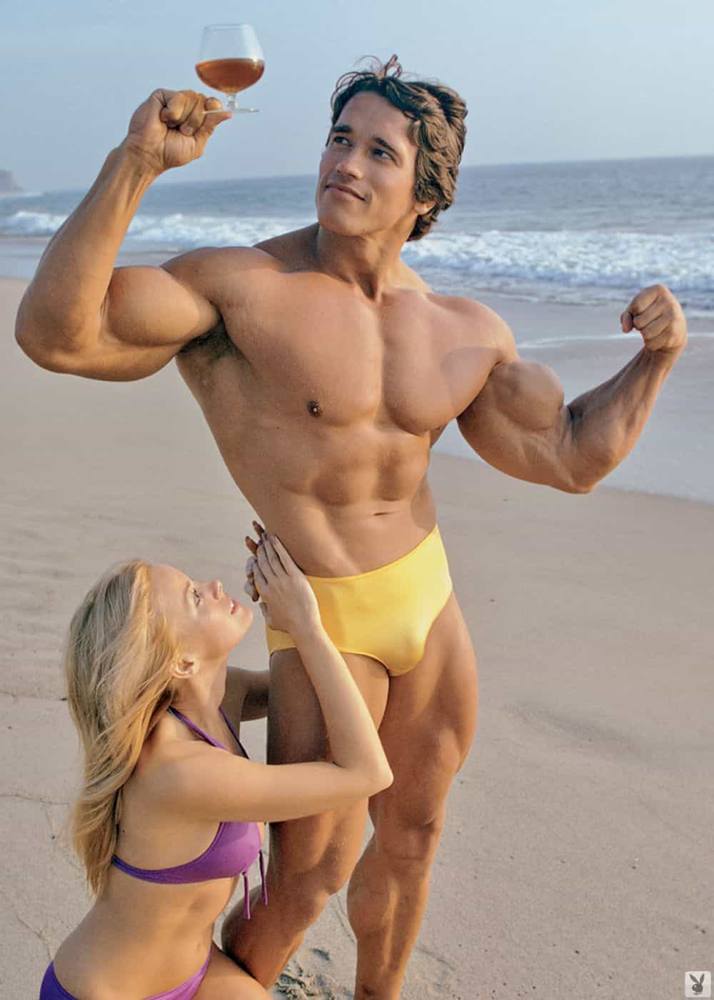
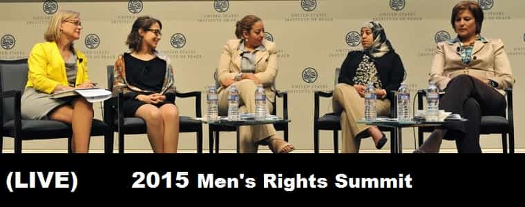

< < < Back
5 Reasons I Am Not A Men’s Rights Activist – Return Of Kings
I, Billiford Honky Chubbs, am not a men’s rights activist.
Doubtless, some of you just imagined me saying that in this guys voice;
but let me say it once again; I am not a Men’s Rights Activist. There are many reasons for this—well… five… so instead of a big witty introductory paragraph how about I jump right into them.
1. MRA’s Are Asking For Rights
Rights have always been granted by the powers that be either because they’re afraid men will take those rights through disobedience, or that men have already begun taking those rights through disobedience (sweet, violent disobedience) and the granting of rights is a last ditch effort at placating them. Men’s Rights would entail a profound, culture shifting change in whatever country that enacted it. Thousands of people would lose their jobs, and hundreds of thousands – if not millions – would lose their ill gotten pay-cheques and financial means. Giving rights to a cause like the gays is easy – nobody is going to get shot because they openly support mos, and the economy doesn’t take a hit when two butt pirates plug each other up Friday night.
On the contrary; gay marriage means more bureaucratic jobs created to cater to Mr and Mr Browndick, and when they get divorced there’s more money to be made off their ruined matrimony. If there was any actual cost to giving gays rights then Obama would be on the tube every night denouncing homosexuality as one of the great sins of our times. The destruction of the frivolous divorce industry alone would be catastrophic to the robber barons and the lampreys perpetuating it. MRA’s asking the government to pretty please give them rights is a futile waste of time.

2. Men’s Rights Are For Weak Men
The majority of fervent MRA’s come across as… well, to put it bluntly – losers. I admit, it pisses me off to see hard working guys get raped in divorce court, or to lose an opportunity at a career or entrance to a university because affirmative action means that women get preference. Yet why are all these divorced men marrying such horrible women in the first place? If you ask, you’ll probably hear a cliché like “She wasn’t the woman I married” but how big of a crock of bullshit is that? Any guy with actual experience with women can tell you that temperamentally and mentally, women are teenagers. Date them and their true colours begin to show after 2-6 weeks. Who woman are at 15, barring some cataclysmic event, is who they are for the rest of their lives. So for all these guys who get ass raped in court; their wives really were angels until they got that ring on them? Really?
Sorry, but I doubt it. There were always signs that the woman they married was unworthy of marriage; it’s just before the marriage all those annoying, greedy habits of hers were ignored because these chumps were just so damn happy to be getting steady sex. They were blinded by the pussy because they couldn’t get the milk from the cow without spending cash on dates and buying their future wives presents to buy her love. They couldn’t see that they had simply rented their wives infatuation with money instead of manliness, and as soon as they put a ring on it all her obligations to him in terms of romance are done. She’s won.
If men are unwilling to better themselves and learn the true nature of women (especially now, since there’s no excuse due to the internet) so they can attract women through manliness instead of Beta Bucks, then they do not deserve sympathy or rights. This is the culture we live in, and there’s no turning back the clock no matter how hard you stamp your foot guys. Adapt or languish. Work harder than women and beat them in the workplace, or get a career women refuse to enter because it’s not a comfy office environment. As a man, Men’s Rights would be nice to have but the guys who really need it have almost always put the chains on themselves. It’s ridiculous to cheer on a movement of men like that, let alone be a part of it. If a man can’t handle his women on his own, than no amount of laws on his side will make her submit to his will.
3. Real Social Sexual Change Lies Outside Of Rights
There’s an old political strategy called Politique du Pire, which essential translates into Making Things Worse. It is a strategy which involves a minor political group intentionally aggravating a powerful political group into making said the powerful overreact against not just the aggravator group but everyone, causing increased suffering and misery amongst the masses which, in theory, would make everyone align against the superior force.
The whole of social sympathy in the west is geared toward women, sexual deviants (gays, transsexuals, etc), and the worthless segment of minorities who refuse to assimilate into the wider society. Women of course receive the majority of this sympathy. Politicians and media suck up incessantly to the ‘fairer’ sex. They constantly prattle on about how women are now the bread winners – then turn around and spout the ridiculous lie that they somehow make 70% less then men do. Movies and television portray women as being ass kicking Amazons with strength equal to men who can whore around, ignore all their financial obligations and still find the perfect prince charming to marry them the moment they want to settle down. Then news sites run stories about women suffering in the dating world, with clichéd headlines like ‘Where have all the good men gone’. Society has it’s hand directly on the pulse of woman’s happiness, and whatever is making them unhappy is studied and addressed.
And what makes women today unhappy? Manly men who treat women exactly how they treat themselves. Men who pump and dump whores, leaving them as scraps for future MRA’s to marry. Men who know that unmarried woman over 24 are a horrific waste of time and therefore only target the young, fertile femmes who haven’t slept around. Women love men who are confident and intelligent enough to treat them as the inferior beings they all know they are, yet unless they’re young and chaste these men almost never marry them. And that causes women intense unhappiness. And unhappy women upset the current societal masters, and in order to study and combat women’s unhappiness they’re going to have to study the problems between the sexes.
The more men who learn to be men, who treat women as inferiors and give value only to women who have sex with a small number of men and marry young, the more unhappy today’s modern woman will be. And to make those women happy they’re going to have to do something to start making men happy. One stud leaving a trail of ten broken hearted whores behind him is worth more (in terms of actual social change) than a thousand MRA’s picketing outside the local courthouse.

4. Men’s Rights Don’t Encourage Men To improve Themselves
Back up to the first point, MRA’s are busy asking for change instead of making a change. They want respect handed to them. That’s not how it works with men. As a man, you get respect for what you do and who you are. I only have so much time and energy to lend to social movements. I’d rather focus on encouraging five guys to make real change to themselves. If a man wants to live a better life, then he must do the following—lift weights; read great books, old and new; and realize and accept the truth of your and society’s reality. Fuck fretting about rights. As a man, fret about yourself and your own goals. The more men with fit bodies, intelligent minds and unshakable confidence, the less we’ll need Men’s Rights – we’ll already have a legion of hard ass sons of bitches taking those rights by the sheer force of their being.

5. Women
Let’s play pretend for a moment. Imagine for the last fifty or so years, there has a been a movement announcing that Blacks were superior to Asians. Asians are ridiculed in the media and blatantly told that they’re inferior to Blacks. Blacks are given more benefits, more legal power, and have their asses kissed while Asians are told how evil they are just for being Asian and that they should suck it up.
Then, after so many decades of being shat on, Asians begin to stand up for themselves. They begin to form movements for their own interests, and individually they start to become really awesome. Suddenly, there is a Asian Rights Movement. While ridiculed and belittled, Asian Rights Activists begin to recieve mainstream attention and recognition. Soon, although small, ARA’s begin to meld into the beginnings of a real political force. ARA’s appear on talk shows, radio shows, news shows and papers. Books about the Asian Rights Movement begin to be printed, the authours going on the circuit and addressing all the problems Asians face in today’s society.
And all the authour’s are black. All the ARA’s giving interviews are black. Black people are talking, as if they have authority, on what it’s like to be an Asian in today’s society. Only black’s in the Asian Rights Movement are given any kind of credence or voice. On the public stage, Asians are pushed to the background of the movement that is supposed to represent them. Isn’t that ridiculous sounding?
Well it’s no less ridiculous then women in the Men’s Rights movement. Women make up a large portion of MRA’s and not just as quiet supporters or cheerleaders as they should be. Many are among the forefront of the current Men’s Rights Movement. Men On Strike, which is currently the most mainstream literature about the problems facing men today, was written by a woman. Who then went on talk shows and talked about the book… to other women. Two women, gabbing about how the difficulties facing men. Imagine two black people on a talk show discussing how hurtful it is to be called Gook, or Chink, Or Slant Eye. They might have a slight idea but really, they don’t know.
Any movement which claims to represent myself or other men, with such a pervasive female presence, is one I’m not going to be a part of. Women have no real idea what it’s like to be a man. We’re genetically different and our lives are lived very, very differently. Yet the MRM’s is flooded with women trying to take the helm, trying to represent ‘men’. And if a movement is being spearheaded by people who can’t even understand the grievance of the people they’re supposed to be representing, how can they be trusted to act in our best interests? The answer is that they can’t. And the fact that the female presence in the MRM – beyond simply agreeing with it or giving moral support – is tolerated by the majority of MRA’s is probably the biggest reason I do not consider myself a part of the movement; even though my goals and desires do match up with many of theirs.

So there you have it! Five reasons my e-mail is going to be flooded with angry hate letters and Return Of King’s is going to be called the worst thing ever to happen to the Manosphere. Men – stop asking for change. Just make it.
Read More: Don’t Be A Boring Beta Male


{kind=link}
{kind=link}
{kind=link}
{kind=link}
{kind=link}